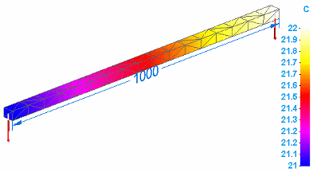
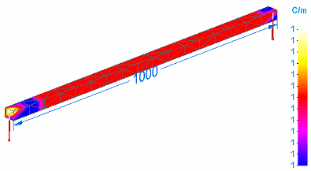

Temperature plots
Temperature plots are the default plots generated for thermal studies. Temperature plots also are generated for thermal coupled studies (thermal stress analysis).
You can display temperature plots when you select Temperature from the Result Type list in the Data Selection group.
Temperature distribution plots
Temperature plots show the distribution of temperatures for each node on the model. You can select nodes with the Probe command to display the temperature at individual nodes.
Temperature plots only display results on the primary model. They do not display deformation.
If a bar that is one meter in length has a temperature of 21° C applied to one end and 22° C to the other end, the temperature plot shows the distribution of the temperatures at each node along the bar.

If you want to see the temperature gradient results, which show the change in temperature per unit length, the Heat Flux check box must be selected in Results Options for studies.
Using the same temperature inputs, the temperature gradient result is 1° C/m.

How do I
Plot resultsLearn more
Plotting resultsResult plots for mixed mesh models
Displacement component plots
Stress component plots
Constraint component plots
Strain component plots
Beam properties
Beam reaction component plots
Beam stress component plots
Beam diagrams
Heat flux component plots
Applied temperature plots